Before you begin
- Complete ToAU 41: Light of Judgment.
- Nyzul Isle Route key item for the registrant; consumed from entrants carrying it.
Starting point
Blank lamp target · Alzadaal Undersea Ruins · J-9
People in this mission

Walkthrough
- Reach Nyzul Isle Staging Point through its registered Runic Portal, or use the Alzadaal teleporter route described in Undersea Scouting.
- Every character needing progress should examine the blank lamp at J-9 and agree to enter.
- Examine the nearby Runic Seal at I-9 and select Path of Darkness. The registrant needs the Nyzul Isle Route and the lamp scene.
- Keep Naja alive. Defeat the four Imperial Gears and reduce Amnaf to 50% HP; follow her retreat, defeat the next four gears and reduce her to 20%.
- Defeat the final Psycheflayer form within 30 minutes, then watch the exit scene in Alzadaal.
Battle and progress notes
- A dead Naja causes failure. After a loss, Rodin-Comidin at Whitegate I-7 replaces the route key item.
- The native Amnaf AI flags parts of her low-HP ability sequence as unfinished. No level-75 solo clear has been verified for Zenith.
Completion and reward
Naja's Comrade-in-arms title.
What this opens
- ToAU 43: Fangs of the Lion
Area maps
Open a zone below, then select a map to enlarge it. Match the named floors and grid coordinates in the steps; these are reference area maps, not a live position tracker.
Alzadaal Undersea Ruins

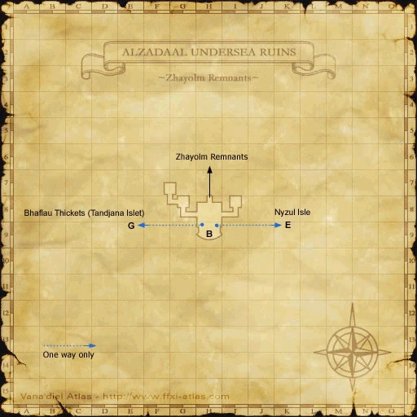


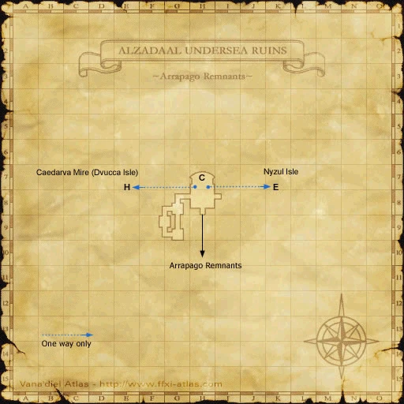


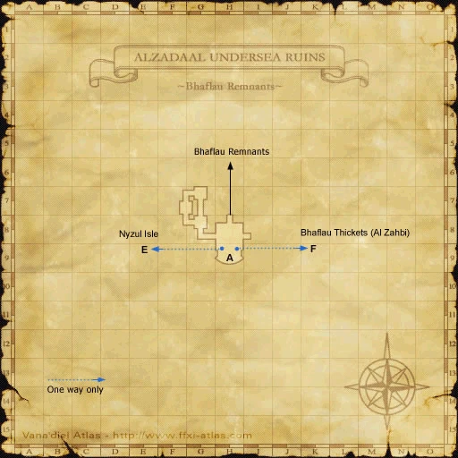


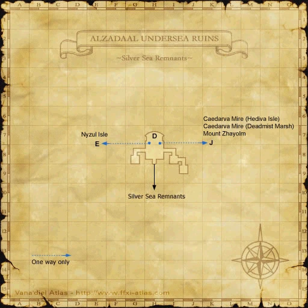


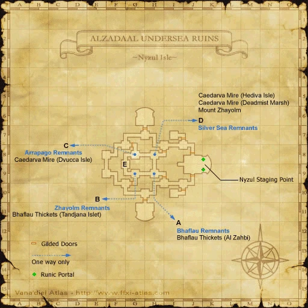


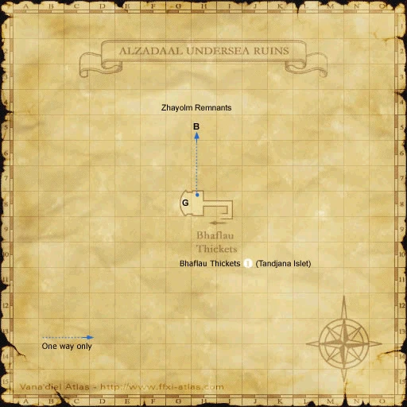


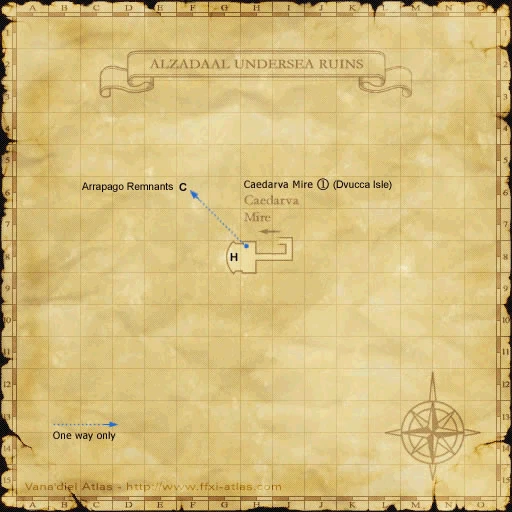


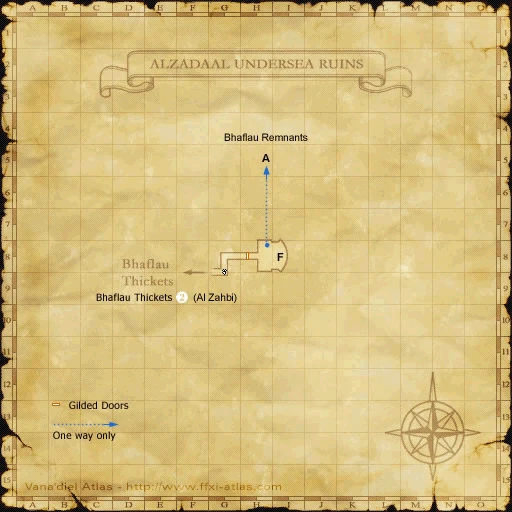


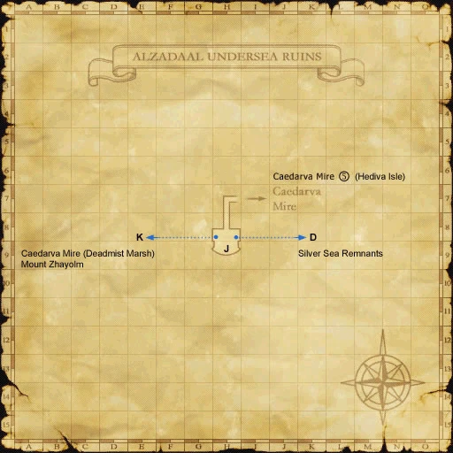


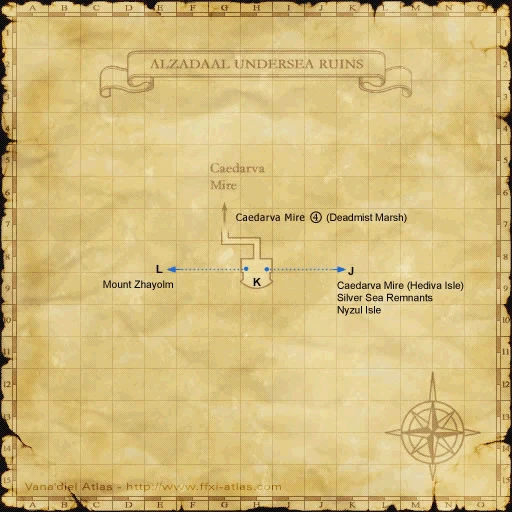


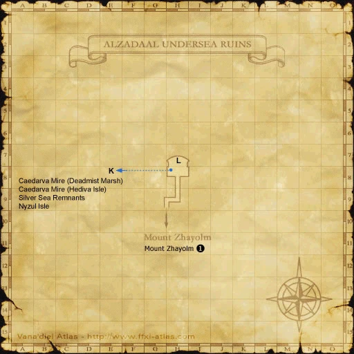


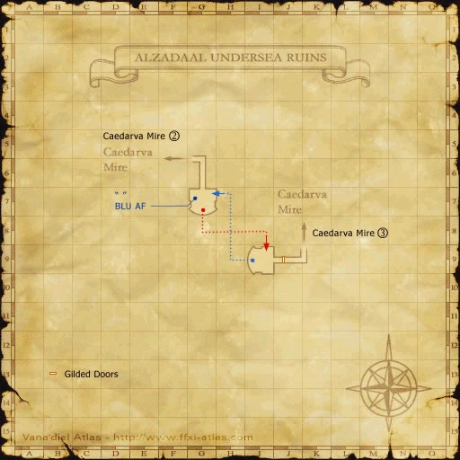


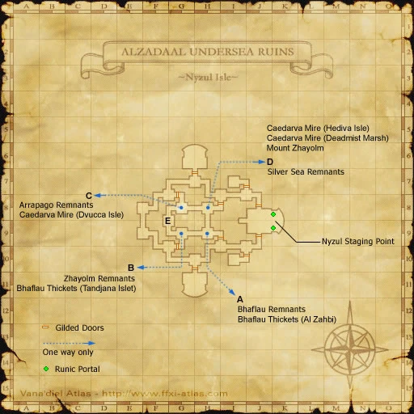

Aht Urhgan Whitegate


Nyzul Isle


Zone guides
References
- HorizonXI reference walkthrough
- Reviewed mission implementation
- Reviewed mission implementation
- Reviewed mission implementation
- Reviewed mission implementation
Steps are an original summary of the linked walkthrough and reviewed source. Other servers’ bonus rewards are not included. How to read requirements, waits and battlefield notes.